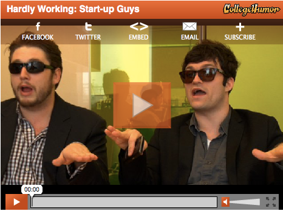
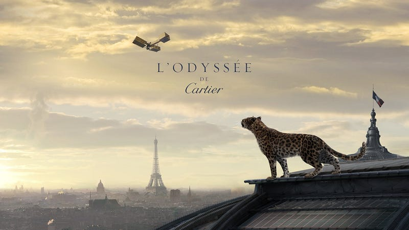
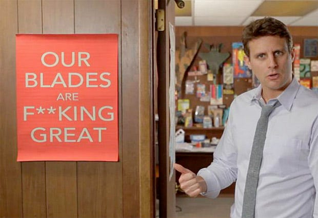
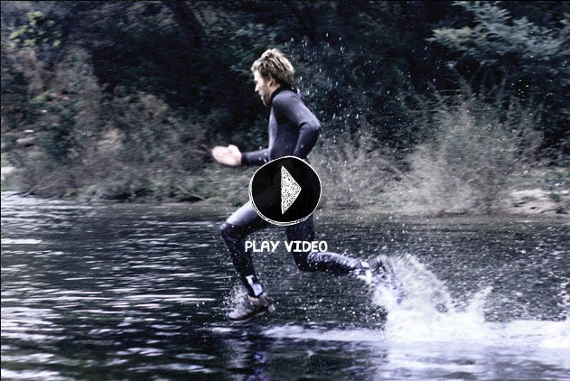

Say Viral One More Time! I'll Punch You in the Throat =)
Fear Facing Adventure Experience Overcoming Challenges Personal Development Risk Taking Digging a bit deeper, the underlying topics GavanBot has discovered are: Personal Growth through Adventure Overcoming Fear and Challenges Encouragement to Take Risks
"We will push to drive awareness, virally."
Shut up. Shut up again. Don’t even start with offering viral anything as an alternative, solution or service. Dare you to tell me you can make my content go viral, double dare you and then I’ll punch you in the throat. Can’t stand people who write checks their ass can’t cash.
There are plenty of dogs dancing, cats playing pianos and some Korean dude who sings about shit I can’t understand, but he is funny looking and I continue to watch. We’re not talking about those ones. We’re talking about the brand new funk.
There is some very compelling content out there that is disguised by brand driven activations. The videos that do exist cost a truck ton of money to produce and socially engineer. When you have budget and talent, you can sway eyeballs. Agencies are really good at that for the most part, that’s why brands hire them. Even the best simply swing the bat and hope to hear that *crack*.

So Mr. Viral, what’s your digital mobile social strategy to unleash the #brandcuffs and make my content soar across the internets? What do you put in your Awesome Sauce? Let me guess, you’re going to post strategically across all our web properties to push a phase driven campaign that unveils itself over time once the viral part kicks in. You plan to stagger the key activations through owned media on each platform through an orchestrated transmedia experience to lower our acquisition cost of a user, right? Then build up the community with content that you’ve curated from the three months you spent building a baseline to understand and know who your audience is. And since a Facebook user is worth $174.11, you figure we owe you $13,582.92 now? <sarcasm>(based off of 78 new likes on the page through the ingenious viral campaign that took all of 18 minutes to schedule and purchase a couple of ads)</sarcasm>. The only thing you can make go viral is that cold sore on your lip. *eww*
It’s amazing what happens when you give someone enough rope to do what they will inevitably do. It’s just painful to watch, you know? Kind of want to euthanize them. Shhh… there, there.
Now that’s over, let’s get to a collection of top notch videos that have great and compelling content through a lovely executed plan, strategy and treatment. They are also done professionally which increases the chance that content is so awesome you have no choice but to share it. That’s how that works. If it’s good, it’s good. You’ll want to share that emotional connection and illicit conversation around the sharing of it.
Pepsi MAX and Jeff Gordon
Red Bull Stratos and Felix Baumgaurtner

Cartier - Metropolitan Museum of Art

Dollar Shave Club For Men - In House

Walk on Water - Hi-Tec
PBS Digital Studios - Mister Rogers Remixed
This is a sliver of the genius that is out there. Here are few links if you would like to consume a few minutes here and there to be thoroughly engaged and entertained.
Viral Videos Chart - Best Viral Videos From Brands | Advertising Age http://ki.am/16K9MLZ
The Top 10 Viral Video Ads Chart | Visible Measures
http://ki.am/10fm1Jc
The Top 10 Branded Viral Videos from 2012 | SocialFresh http://ki.am/10IhzS1
That should keep you occupied for a bit. If you want more, I’m sure you’ll be able to find more, they are everywhere.
So remember, don’t write checks your ass can’t cash. That means don’t tell me you’re going to make me go viral, you have very limited control over that. The content has to be compelling and there may still be a chance to get more eyes on it with certain tactics and initiatives, but the bottom line is that if it sucks, you’ll know within the first 301 views or not. Timing and context are two big variables in the viral equation and that is where our culture defines what is good. And rather than having bad content imposed upon them, they’ll just stop watching. The metric you really want to concentrate on is the percentage of viewers who watch all the way to the end, that’s a motivated and engaged user.
This make you go viral business, it’s a personal pet peeve is all. I know what it takes to push content into the matrix. I’ve been lucky to have been given the clarity and a whole lot of understanding for the pattern recognition it requires to even step to the social beast. In one experiment conducted over a period of 30 months, I managed to get retweeted over a million times which resulted in just over 200 million impressions. I’ve failed time and time again in search of the formula. To create that emotional connection with someone and have content so compelling that the feeling moves them to share it with those that are close to them, that’s the best win you could ever ask for. There is no formula to it, you just have to make more cool shit.